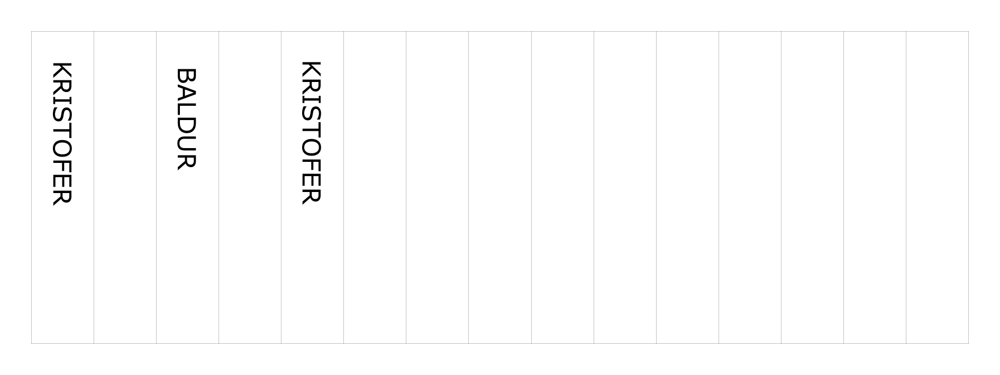

Verkefni 2 - Kerf
Hér má lesa um framkvæmd á kerf prófi fyrir geislaskurðvél í FabLab. Verkefnið var unnið af Baldri Björnssyni, Kristófer Bjarma Scram og Kristófer Þorgrímssyni. Niðurstöður úr þessu prófi eru svo notaðar við vinnu á einstaklingsverkefni við geirneglt módel.
Tilgangur
Kerf er það þykkt efni sem geislinn brennir í burtu við það að skera í gegnum efni. Við þykkara efni þá ferðst geislinn hægar og brennir þar af leiðandi í burtu meira efni. Því er mikilvægt að gera þessa prófun í því efni sem við ætlum að vinna með. Í okkar tilfelli var það 4mm þykkur birkikrossviður. Við gerð geirneglda módela eru mikilvægt að það passi vel saman og því þarf að gera ráð fyrir þessari stærð við hönnun.
Framkvæmd
Í Fusion 360 voru teiknaðir upp 15 kassar hlið við hlið. Teikningin var svo vistuð sem dxf skrá og opnuð í Inkscape. Þar voru allar línuþykktir stilltar sem 0,02mm og skilur geislaskurðvélin það sem skurð. Svo skrifuðum við nöfnin okkar á þrjá kassa með þykkari línum. Þær útlínur skilur vélin sem rasterize. Úr inkscape var skráin svo vistuð sem pdf sem vélin getur svo lesið.
Næsta skref var svo að byrja að skera í plötuna.

Niðurstöður
Til þess að mæla þykktina á geislaskurðinu, það sem kallast kerf, var öllum kössunum raðað þétt upp við hvorn annan og bilið sem myndaðast mælt. Þeirri vegalengd var svo deilt með sextán sem er fjöldi lína sem geislinn skar. Þessar mælingar gáfu okkur þykkt kerfs sem 0,13mm.